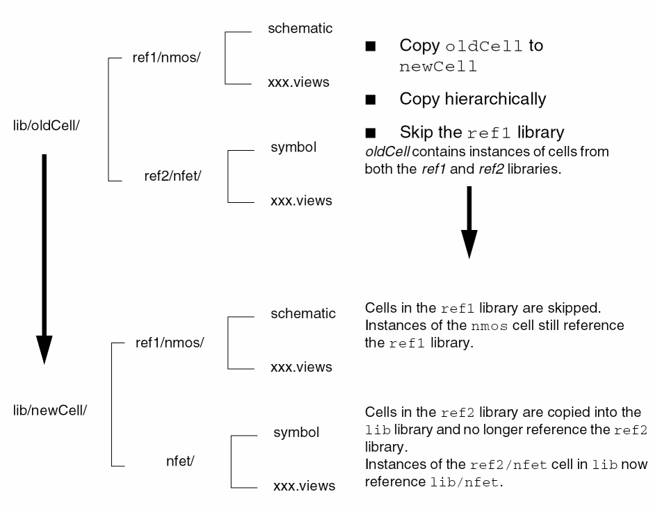

Adding a Copied Cell to a Category
To add a copied cell to a category, do the following:
-
Select the Add To Category check box.
The Add To Category and Cells fields become active. - In the Add To Category field, type a new or existing category name.
-
In the Cells field, type a valid filter string against which to match the cell name that you want to add to the specified category.
By default, * appears in the Cells field, thus matching any copied cell name. - Click OK.
The copied cell is added to the specified category. If the category does not already exist, it is created.
Skip Libraries Together with Update Instances
The following example shows what happens when you specify a reference library to be skipped in a hierarchical cell copy with the Update Instances option enabled.

Related Topics
Return to top